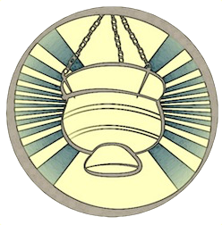
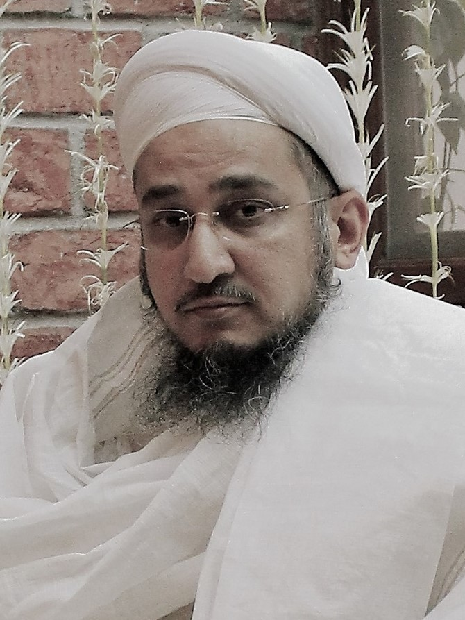

The Qutbi Jubilee Scholarship Program
This initiative is founded by the Qutbi Jubilee Scholarship Program (QJSP) - a scholarship, mentoring, and career counseling program dedicated to establishing the importance of higher education in the community, especially with regards to women. At least 30% of the grants are earmarked for distinguished girls. Additionally, QJSP is interested in supporting educational projects and conferences, especially ones that foster harmonious co-existence.
To this end, QJSP has initiated The Taqreeb Conference Series, an annual international gathering of scholars and leaders of communities to discuss and promote harmonious coexistence. The first conference in the series was held in collaboration with the University of Calcutta in September 2016.

Our Founder
The 53rd Dai-l-Mutlaq, Syedna Khuzaima Qutbuddin RA, founded the Qutbi Jubilee Scholarship Program in 2012 when the community celebrated his 50 years of service as Mazoon-e-Dawat. Syedna Qutbuddin was an inspiring leader whose kindness and courage was a beacon of hope for a better tomorrow. An ardent supporter of education, he believed that education empowered women and men to help create a society that is peaceful, respectful of differences and forward looking. Syedna Qutbuddin believed that education was the foundation for communal harmony and religious tolerance.
After Syedna Qutbuddin’s RA sad demise in March 2016, his Mansoos and successor, the 54th Dai-l-Mutlaq, Syedna Taher Fakhruddin TUS, continues the vision of this program and is the passionate patron of this program. Syedna Fakhruddin inspires the community to achieve the highest standards of success in this world while adhering to one’s principles and values. Syedna Fakhruddin has been trained in Islamic sciences, Fatimid philosophy by his predecessors the 52nd Dai-l-Mutlaq Syedna Mohammed Burhanuddin RA, and the 53rd Dai-l-Mutlaq Syedna Khuzaima Qutbuddin RA, and also has a Masters in Arabic literature from the University College of London.
In a recent press meet in Mumbai, Syedna Fakhruddin TUS referred to a recent survey in which found that the percentage of boys who had completed primary education in the community was 88% while the percentage of girls who had completed primary education was 92%. The percentage for higher education however was not as equal. He expressed his hope that in coming years the ratio would demonstrate the same level of achievement in higher education for both men and women. Syedna Fakhruddin TUS also expressed his wish that the QJSP program would support and foster higher education in the community and extend its efforts to the wider Muslim community and humanity at large.
The history of the Dawoodi Bohra Community in India and their interactions with other communities are noteworthy for the goal of taqreeb. On the one hand, their perpetual status as a minority necessitated some form of pragmatic philosophy of coexistence; on the other hand, their leaders at several points in time, initiated influential movements of taqreeb, whose effects were felt nationwide. These movements frequently drew upon the philosophy and history of the Fatimid Caliph-Imams – to whom the Dawoodi Bohras trace their heritage – to articulate a universal and divine origin to all sects and beliefs. In the modern period, a noteworthy example is that of the community’s 51st leader, Syedna Taher Saifuddin (1888-1965), who lead initiatives to nurture taqreeb among religious communities. Through more than 40 treatises and thousands of lines of Arabic devotional poetry, he presented a model of spiritual Islam that seeks to shun all forms and facets of disharmony and enmity among members of humanity over the globe.
